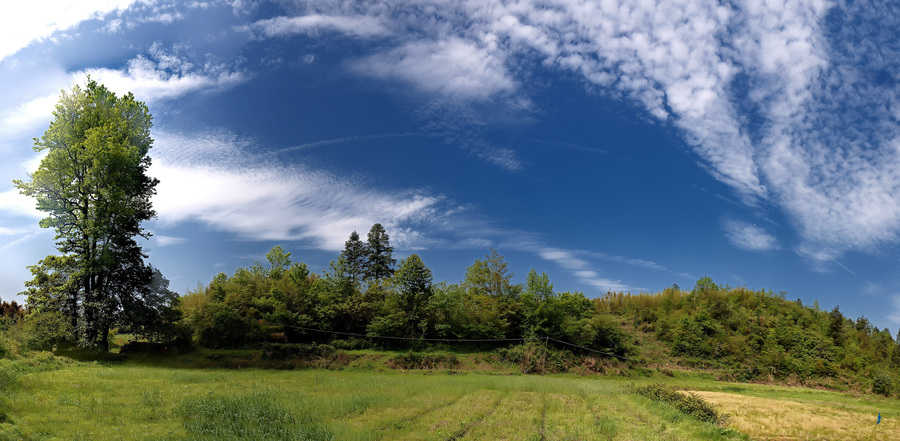
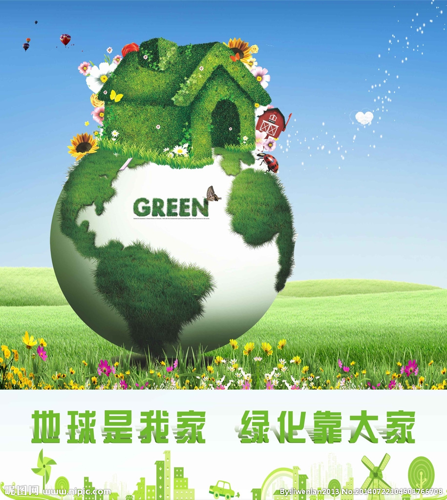

自然生态环境治理方法探索
河北新闻网 2017年3月20日
随着我国经济社会的快速发展,矿产开发与自然生态环境保护之间的矛盾日益突出。为贯彻 人口、资源、环境!的基本国策,实现矿产资源开发和生态环境保护的良性循环,加强矿山自然生态环境治理,提高人民生活水平,促进经济社会可持续发展,必须进行矿山自然生态环境治理。

根据周边环境,坡脚可种植一排高大乔木作为遮挡。因现场生长的植物是经过多年优胜劣汰后生成的,具有较高的野生种群的特点,抗旱、耐高温、耐贫瘠,并且具有自播等很强的繁殖能力。进行场底复绿时应尽量不破坏或少破坏原有野生植被。场底稍作平整后,在坡脚种植槽内植树,间距3m。植物种类可就地取材,尽可能选择与当地环境统一的乡土种,考虑当地气候特点及成土母质的特性,树种可选用松树和杉树。而平整的场地可在植被相对稀疏处撒播具有很强繁殖能力的当地野生植物种群,达到与当地环境协调一致。同时要做好支撑、修剪、遮荫和浇水等养护工作,确保成活率在90%以上。

评论区
姓名：
环境感受： 优 良 合格 差
在线感受： 优 良 合格 差
对环境是否满意：满意 不满意
评论：
用户评论：
- 心动：现在环境太恶略了
- 天空：没办法了
- 111：生态环境需要我们每一个人去建设
- 我的：保护环境，从我做起